Kapitel 2 Att börja använda R
I detta kapitel ska du inledningsvis installera R samt ett gränssnitt som kallas för RStudio. RStudio kan liknas vid en avancerad textredigerare som underlättar arbetet med R. Det går visserligen alldeles utmärkt att använda R som det är, men RStudio förenklar i många avseenden programmeringen.
2.1 Installation av R och RStudio
Vid programmering är det mycket viktigt att noga följa instruktioner. Du ska nu först installera R. Därefter ska du installera RStudio.
2.1.1 Installation av R på MacOS
- Ladda ner den senaste versionen från https://cran.r-project.org/bin/macosx/.
Notera att versionen måste passa för ditt MacOS. Leta upp den version som passar till ditt MacOS om du har en äldre Mac.
- Ladda ner pkg-filen under Latest release. Öppna den nedladdade .pkg-filen och installera R.
2.1.2 Installation av R på Windows
Gå till hemsidan https://cran.r-project.org/bin/windows/base/.
Klicka på ‘’Download R (versionnummer) for Windows’’. Eventuellt fungerar inte den senaste versionen ditt Window om du har en äldre Windows-versions. Prova då en tidigare version av R. Du kanske även upptäcker att senaste versionnummer på Rs hemsida inte är samma som används i detta exempel eftersom det kan ha kommit senare versioner. För din del saknar just detta praktisk betydelse.
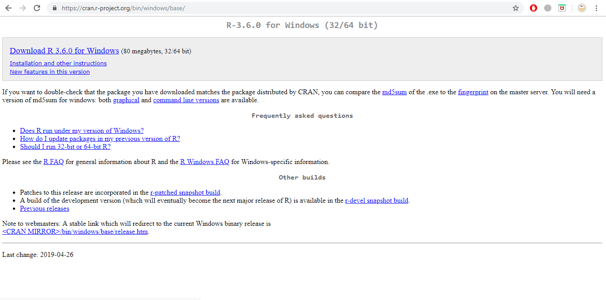
Dubbelklicka på ‘’R installer’’ för att starta installationen.
Välj språk och tryck OK.
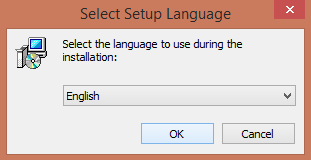
- Välj Next.
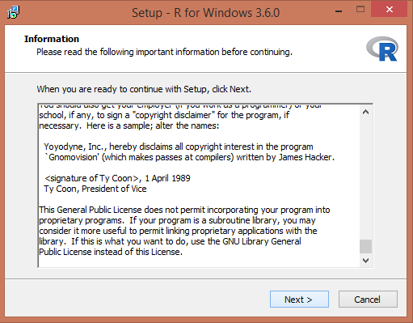
- Välj sökväg för din installation. Låt default vara. Klicka Next.
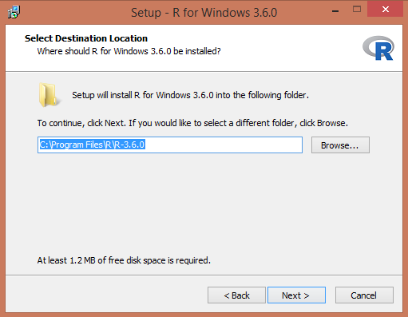
- För att förenkla, välj alla komponenter för installation. Klicka Next.
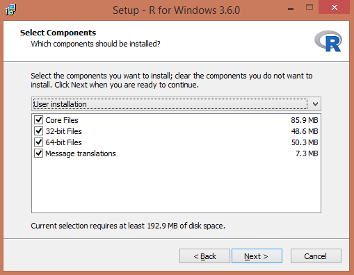
- Klicka No (accept defaults).
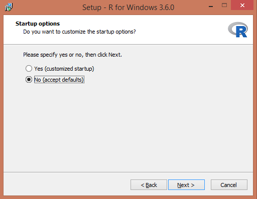
- För att lägga till R i Startmenyn, klicka bort kryssrutan nedan. Klicka Next.
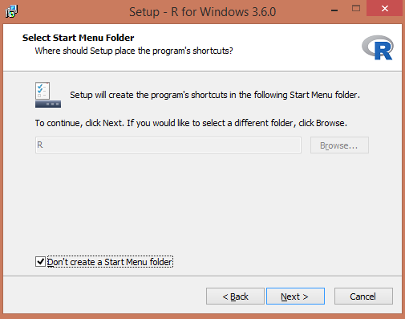
- Välj om du vill ha genvägar. Klicka Next.
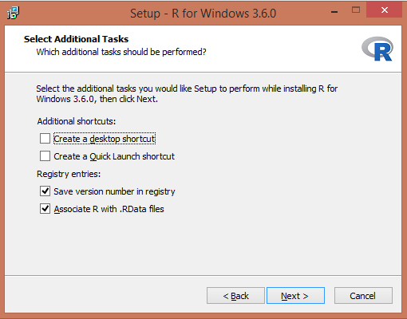
- Installation börjar! Starta R när den är klar.
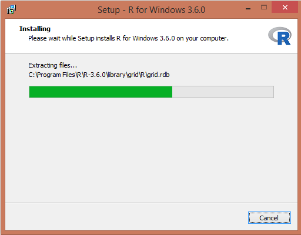
- Starta R för första gången. På Windows ser det ut så här.
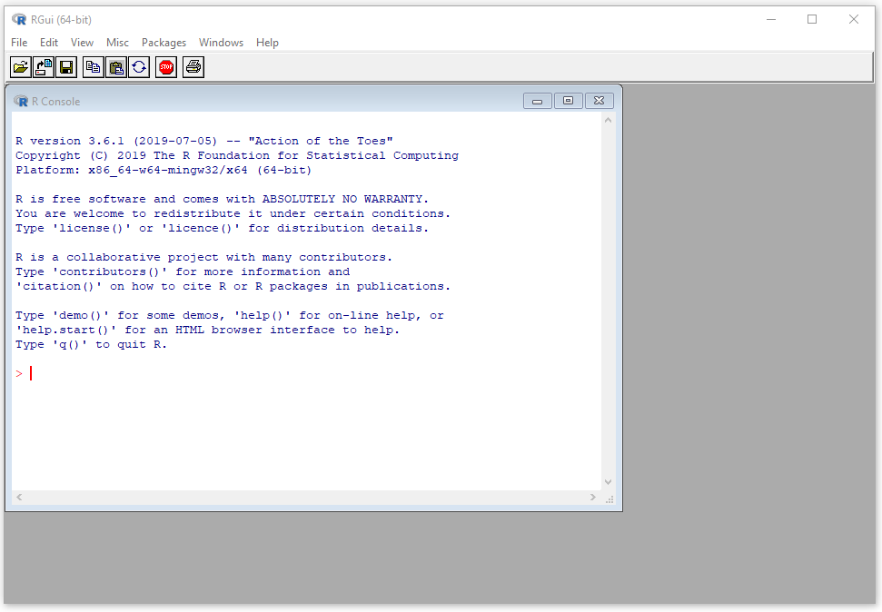
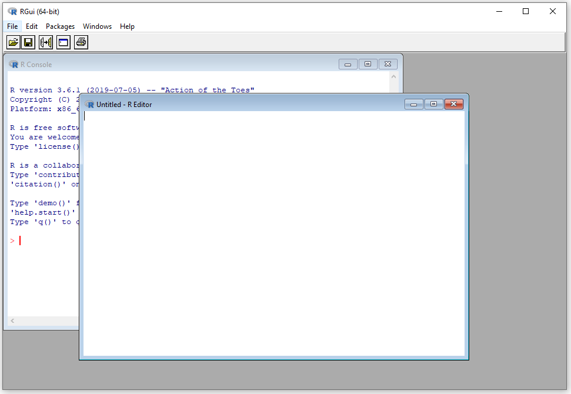
2.2 Installation av RStudio
Av olika anledningar väljer vi att inte arbeta i R Editor utan vi väljer RStudio. Stäng därför ner R.
- Gå till https://rstudio.com/products/rstudio/download/}. 2 Välj RStudio Desktop Free. 3 Välj sedan den version stämmer överens med ditt operativsystem.
- Installera (på Windows) genom att klicka Next->Next->Install
- Starta RStudio.
Du ska nu fått upp nedanstående. Vi ska i detalj beskriva vad de olika panelerna till höger kommer vi återkomma till när det är aktuellt.
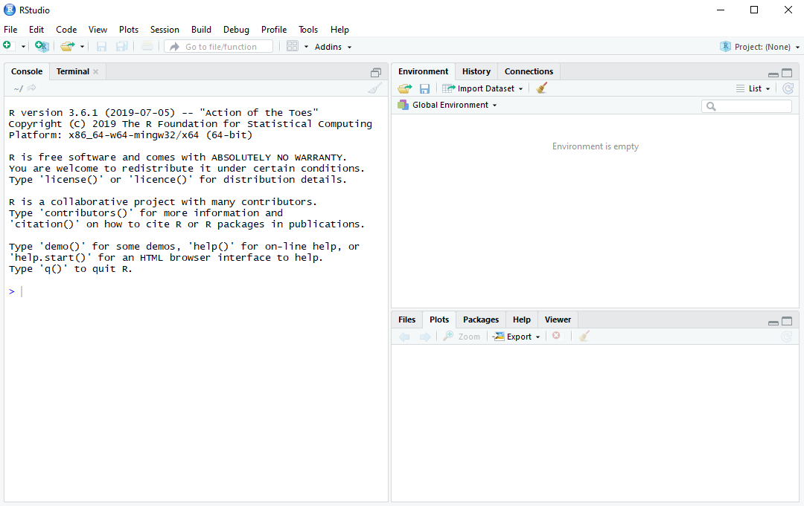
- Avsluta RStudio.

Om du mot förmodan inte skulle lyckas installera R och RStudio, så finns möjligheten att koppla upp sig till Statistiska institutionens datorer via fjärrskrivbordet och på så sätt få tillgång nödvändig programvara.
2.3 Första sessionen
I denna session ska du bekanta dig med R och prova använda R som en miniräknare. Starta RStudio. Till vänster ska du ha en panel som heter Console. I denna panel redovisas resultat. Vad övriga paneler gör kommer vi återkomma till när det blir aktuellt. Välj i menyn File > New File > R Script. Ett nytt fönster (Untitled1) öppnas ovanför Console

Detta är ett script-fönster eller en editor. I editorn skrivs kommandon in som sedan kan utvärderas av R. Resultaten redovisas i Console. Ha för vana att aldrig skriva kod direkt i R Console. I princip är en script-fil inte annorlunda än en vanlig textfil, förutom att filen har tillägget .R. Spara script med jämna mellanrum eftersom det är önskvärt att inte förlora sin kod ifall något oförutsett händer. Skapa därför en mapp med namnet A5Rkod på din dator. Välj File > Save As… och spara i A5Rkod scriptet Untitled med namnet myfirstscript.R.
Efter att vi har skrivit koden i editorn måste vi meddela R att koden ska utvärderas. Kod i scriptfilen körs (exekveras) på tre olika sätt:
- En rad: Raden där markören är placerad körs med Ctrl+Enter (command + Enter på Mac) eller Run ovanför scriptet.
- Flera rader: Markera kodavsnittet och tryck Ctrl+Enter (command + Enter på Mac) eller Run.
- Hela scriptet: Ctrl+Shift+Enter
Det finns några viktiga punkter att ha i åtanke:
- Om avsikten är att köra kod som sträcker sig över flera rader måste man avsluta raden med räknetecken \((+,-,*,/)\), kommatecken \(,\) eller vänsterparentes \((\).
- En rad inleds aldrig med räknetecken eller kommatecken.
- En rad som inleds med # exekveras inte. Tecknet # används för att kommentera koden, vilket viktigt eftersom vi då i text kan förklara vad koden gör.
- Skriv in nedanstående script till myfirstscript.R. Spara.
# Detta är mitt första R-script som heter myfirstscript.R.
# I detta script använder jag R som miniräknare samt
# exekverar kod från scriptet.
1+1
1+3
2-7
2*3
4/5
3^2- Använd R som miniräknare genom att prova alla tre sätt att köra kod. Det är nödvändigt att bekanta sig med hur kod körs för att bli bekväm med att simultant arbeta i script-fönstret och se resultat i Console. Återigen, skriv aldrig i Console.
1+1
[1] 2
1+3
[1] 4
2-7
[1] -5
2*3
[1] 6
4/5
[1] 0.8
3^2
[1] 9- Matematiska funktioner, t ex kvadratroten, finns implementerade i R. Skriv
sqrt(6)i scriptet och spara. Kör koden och erhåll följande i Console.
sqrt(6)
[1] 2.44949- Även exponentialfunktionen \(\exp(x)\) finns i R. Skriv
exp(3)i script-filen, spara och kör.
exp(3)
[1] 20.08554- Konstanten \(\pi\) finns i R. Skriv
pii script-filen, spara och kör.
pi
[1] 3.141593- Kod finns ofta på flera rader. Anta att vi önskar beräkna \(2 + 2+ 3+ 5\) men att koden inte får plats på en rad utan måste delas upp på två rader. Skriv in följande rader i scriptet, spara, markera bägge raderna och kör.
# Kod över 2 rader
2 + 2 +
3 + 5Följande resultat ska presenteras i Console.
# Kod över 2 rader
2 + 2 +
3 + 5
[1] 12- Kod finns ofta på flera rader. Skriv in följande rader i scriptet, spara, markera bägge raderna och kör. Jämför resultatet med punkt 6!
2 + 2
+ 3 + 5Nu utvärderas raderna var för sig, vilket inte var avsikten med analysen.
2 + 2
[1] 4
+ 3 + 5
[1] 8Grattis! Du har nu genomfört din första session i R. Scriptet ska se ut enligt nedan. Spara och stäng R.
# Detta är mitt första R-script som heter myfirstscript.R.
# I detta script använder jag R som miniräknare samt
# exekverar kod från scriptet.
1+1
1+3
2-7
2*3
4/5
3^2
# Kvadratroten
sqrt(6)
# Exponentialfunktionen
exp(3)
# Pi
pi
# Kod över 2 rader
2 + 2 +
3 + 5
2 + 2
+ 3 + 52.4 Paket
En viktig styrka med R är det stora antalet tillgängliga paket utvecklade av användare. Grundinstallationen av R är nämligen tämligen begränsad vad gäller funktionalitet, men med alla paket utvidgas den statistiska verktygslådan, de grafiska möjligheterna och förmågan att hantera olika typer av data rejält. Det finns ungefär 15000 paket på “The Comprehensive R Archive Network” (CRAN) som är Rs arkiv för paket:
https://cran.r-project.org/web/packages/available_packages_by_name.html
Det finns ytterligare tusentals andra paket som dock inte genomgått samma granskning som paketen på CRAN, till exempel på github. Eftersom antalet paket är överväldigande för nybörjaren kan det vara ett stöd att känna till de vanligaste paketen. Ett förslag på en lista över viktiga paket finns här:
https://support.rstudio.com/hc/en-us/articles/201057987-Quick-list-of-useful-R-packages
För att installera ett paket skriver man in paketnamnet med ett kommando alternativt använda menyn i RStudio under *Tools > Install Packages**.
Vi exemplifierar nu med ett paket som hjälper oss att läsa data från Excel-filer. Funktionalitet för inläsning från Excel-filer finns inte i basversionen av R, därför är detta paket nödvändigt om data är sparat i en Excelfil.
Vi installerar paketet readxl genom att i Console skriva in install.packages("readxl") och trycka enter. Som tidigare nämnt går det även att installera paket via menyn. Efter installationen finns paketet sparat på din dator. R har emellertid inte ännu aktiverat det. Genom att skriva library("readxl") och trycka enter aktiveras paketet. Nu kan analyser i R utnyttja paketets funktionalitet.
Observera att ett paket måste aktiveras på nytt varje gång RStudio öppnas. Dock behövs det bara installeras en enda gång.
2.5 Sammanfattning
Du ska kunna
- installera R och Rstudio och starta det utan felmeddelanden.
- använda R som miniräknare och använda de olika metoderna för att exekvera kod i editorn.
- installera ett R-paket och aktivera det.
2.6 Övningar
Övning 2.1
Du har ett stickprov betående av observationerna \(4,-2,5,6,8\).
- Beräkna medelvärdet.
- Beräkna standardavvikelsen.
- Beräkna variationsbredden.
- Beräkna det geometriska medelvärdet för de positiva värden \(4, 5, 6, 8\).
- Beräkna det geometriska medelvärdet för alla värden \(4, -2, 5, 6, 8\).
Övning 2.2
Ett slumpmässigt urval ger följande observationer \(0, 1, 1, 0, 0, 0, 0, 0, 1, 0, 1, 0, 1\),där \(1=Arbetslös\) och \(0=Förvärvsarbetande\). Beräkna andelen arbetslösa i stickprovet.
Övning 2.3
Kosumentpriset 2006-2011 är
| 2006 | 284.2 |
| 2007 | 290.5 |
| 2008 | 300.6 |
| 2009 | 299.7 |
| 2010 | 303.5 |
| 2011 | 311.4 |
Med hur många procent har prisnivån förändrats från 2007 till 2010?
Övning 2.4
Denna övningar handlar om potentslagarna. Då \(x\) och \(y\) är reella och \(a,b>0\) gäller följande likheter:
- \(a^x\cdot a^y=a^{x+y}\)
- \((a^x)^y=a^{xy}\)
- \(\left(\frac{a}{b}\right)^x=\frac{a^x}{b^x}\)
- \(\frac{a^x}{a^y}=a^{x-y}\)
- \(a^x \cdot b^x=(ab)^x\)
- \(a^0=1\)
Beräkna nedanstående uttryck relatera svaren till potenslagarna.
- \(4^2 + 4^3\)
- \(4^2*4^3\)
- \(4^5\)
- \((4^2)^3\)
- \(4^15\)
- \(4^2/4^3\)
- \(4^{-1}\)
- \(4^{-2}\)
- \(1/(4^2)\)
- \(1/16\)
- \(3^4*4^4\)
- \(12^4\)
Övning 2.5
Den naturliga logaritmen, dvs logaritmen med basen \(e \approx 2.718282\), används ofta i statistiska beräkningar. Några logaratimlagar som gäller för naturliga logaritmen är:
- \(\ln\, \left (x\cdot y \right )=\ln\,x+\ln\,y\)
- \(\ln\, \left (x/ y \right )=\ln\,x-\ln\,y\)
- \(\ln\,x^{a}=a\cdot \ln\,x\)
- \(\ln e = 1\)
- \(e^{\ln x} = x\)
- \(\ln^{e^x} = x\)
Beräkna nedanstående uttryck och relatera svaren till logaritmlagarna
- \(\ln(3*4)\)
- \(\ln(3) + \ln(4)\)
- \(\ln(3/4)\)
- \(\ln(3) - \ln(4)\)
- \(\ln e\)
- \(\ln e^5\)
- \(e^{5+6}\)
- \(e^5*e^6\)
- $5 5 + 6 6
Övning 2.6
Låt observationerna \(4,-2,5,6,8\) vara obundet slumpmässigt urval från en normalfördelad population. Genomför en hypotesprövning på 5% signifikansnivå för att testa medelvärdet i population är skild från 1.
Övning 2.7
Du observerar följande datapunkter \(x = \{4,7,2,4,6\}\) och $y={7,3, 2, 5,6}$.
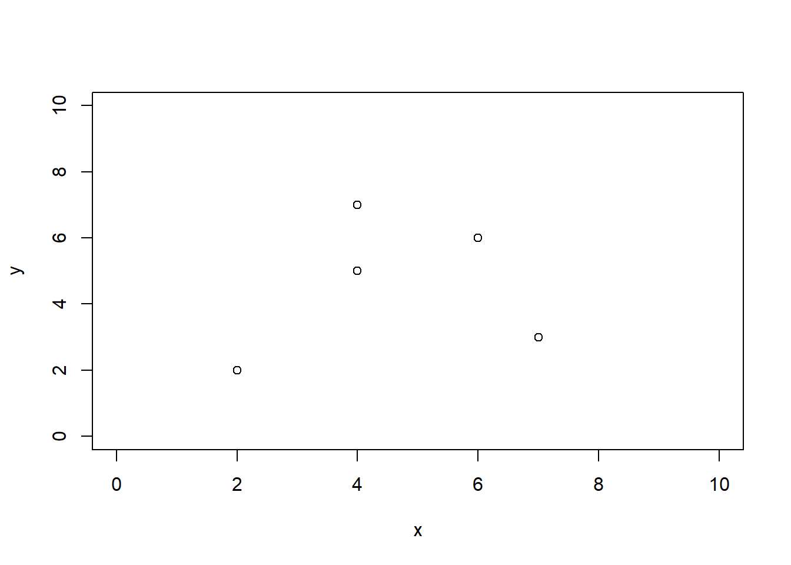
- Använd minsta-kvadratmetoden och beräkna koefficienterna \(a\) och \(b\) i regressionslinjen \(y=a + bx\).
- Använd koefficienterna och ge en prediktion för \(y\) givet att \(x=7\).
- Beräkna residualen för \(x=7\)
- Beräkna residualspridningen.
Övning 2.8
- Installera paketet MASS som innehåller funktioner som kan vara användbara senare på kursen.
- Aktivera det installerade paketet MASS.